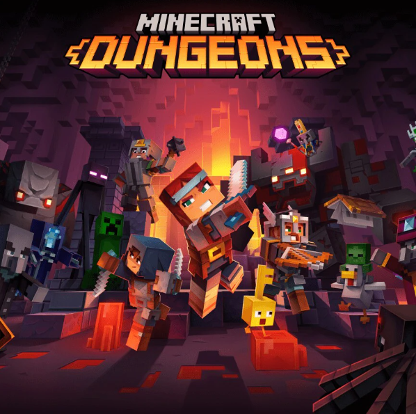
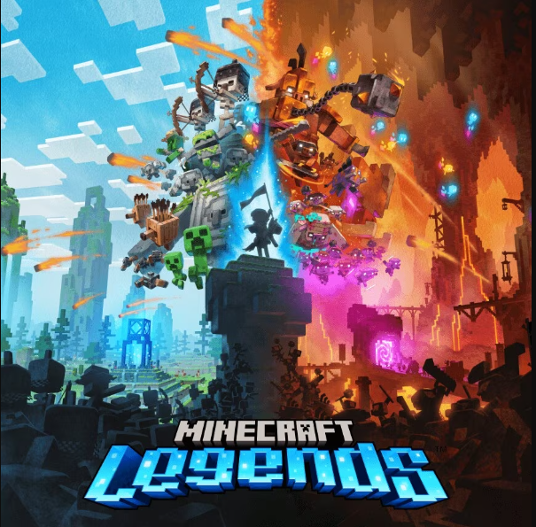
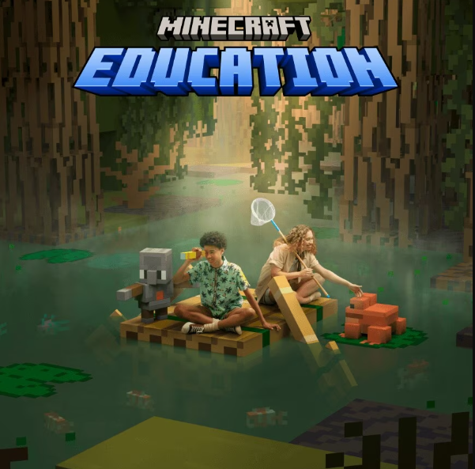

DESCUBRE NUESTROS JUEGOS

Minecraft
Sandbox de supervivencia, aventura. Un solo jugador + multijugador

Minecraft Dungeons
Exploración de mazmorras, RPG de acción. Un solo jugador + multijugador

Minecraft Legends
Exploración de mazmorras, RPG de acción. Un solo jugador + multijugador

Minecraft Education
Educación, sandbox de supervivencia, aventura. Un solo jugador + multijugador